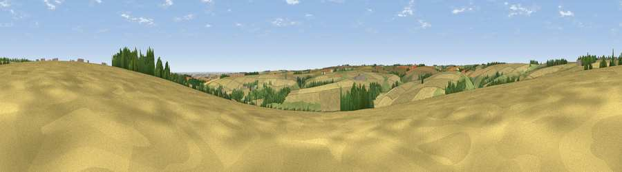

Viewpoint near Fimber
#30027 in England · top 67% of its area beats it · near FimberWhere it is
The exact computed spot (SE 88325 62125). Click the marker for map links.
The view, rendered

A 360° render of this exact spot computed from the terrain model, tree cover and land cover — summer colours, afternoon light, calibrated against photographs of famous viewpoints. Real trees, hedges and buildings will differ in detail.
The panorama
Grey silhouette: terrain skyline in each direction (720 bearings, Earth curvature and refraction included). Dashed green: skyline with trees (+15 m) and buildings (+8 m) as obstacles. Blue strip: how far the ground is visible on each bearing.
Where the view opens
Wedge length = distance to the farthest visible ground on that bearing (vegetation-aware). Rings at 10, 25 and 50 km.
What fills the view
73% cropland · 20% grassland · 7% woodland
Angular shares of the visible panorama (visual magnitude), not map area. Landscape diversity 0.33 (0–1 Shannon).
Key numbers
More beautiful places nearby
The staircase of upgrades: each row has a higher view potential than everything closer. Driving times are estimates from straight-line distance, calibrated against real road routing — check an actual route before setting out.
| Place | Direction | Drive | Score |
|---|---|---|---|
| Viewpoint near Birdsall | WNW · 5 km | ~12 min | 61.8 |
| Viewpoint near Birdsall | NW · 7 km | ~14 min | 62.5 |
| Viewpoint near North Grimston | NNW · 7 km | ~15 min | 64.3 |
| Viewpoint near Birdsall | WNW · 8 km | ~16 min | 71.8 |
| Viewpoint near Acklam | W · 8 km | ~17 min | 73.8 |
| Seamer Beacon | NNE · 28 km | ~45 min | 76.9 |
| Beacon Hill | ENE · 29 km | ~45 min | 79.1 |
| Viewpoint near Speeton | ENE · 29 km | ~46 min | 80.0 |
54.04753, -0.65250 · source: screening · position refined by local search. Computed location — check access rights before visiting.